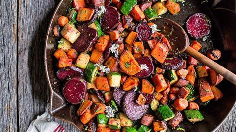

rootatouille

why rootatouille?
served warm or cold, rootatouille is a delicious side dish with myriad root vegetables.
ingredients
- potatoes
- beets
- onions
- carrots
- roasting herbs (thyme, dill)
- lemon wedge
- 2 tbsp olive oil
- 2 tbsp coarse salt
steps
- preheat oven to 375F
- cut vegetables no larger than 1"
- mix with oil, herbs, lemon juice, and salt in large bowl
- spread evenly in roasting pan
- roast in oven for 40 minutes
- remove lid from pan to cook uncovered for 10 minutes
- remove pan from oven to sit for 10 minutes
- serve.